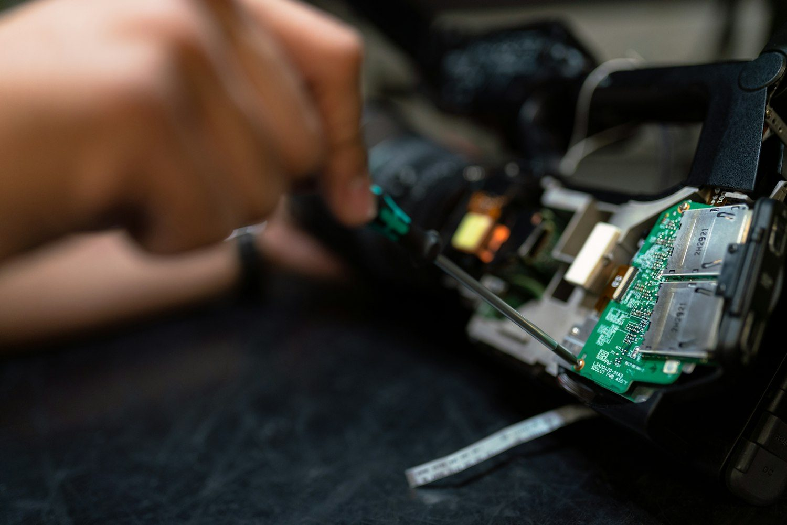

HVAC · AHU 03
Marina House · Floor 3
6 hrsB. Peters
For facility managers and building maintenance teams. Brickwise groups repeated defects in photos, reads technician notes and suggests which issues need a qualified inspection first.
 BUILDING OPERATIONS / LICENSED PHOTOGRAPHY
BUILDING OPERATIONS / LICENSED PHOTOGRAPHYReview the image and the technician note before selecting a repair.
06 HOURS / ESTIMATED WORKMarina House · Floor 3
Marina House · Core B
Ikeja Exchange · Floor 2
Ikeja Exchange · Plant
Wuse Court · Ground
Garki Place · Suite 8

An image cannot certify structural or equipment safety. A qualified professional inspects the condition and approves the work.

A building inspection can produce repeated images and notes about the same asset. The facilities team needs a grouped finding, the relevant evidence and a qualified person to approve the next action.
Read the operating problemFilter the supplied inspection records by review state. Open an item to inspect its source note before using the full workspace.
Read the observation and its owner before taking the next step.
AI reviews building inspection images and notes, then drafts an evidence-linked repair list. Choose a sample case and inspect the evidence behind the finding.
The sample inspection observation shows water staining below AHU 03’s drain connection. The photograph does not establish whether the source is active leakage or an earlier incident.
Evidence is prepared for this demonstration. Use the source reference to check the finding.See how the source becomes a specific question, a cited observation and a next action.
Agree the baseline and review the result with the person responsible for the work.
Compare grouped findings with the manager’s approved asset-level issue list.
Track confirmed observations, missed defects and cases needing more evidence.
Include the qualified review and preparation of an actionable work item.
Compare two time assumptions for inspection packs. The estimate is calculated from your entries; it is not a measured customer result.
The initial strategy follows the teams already responsible for this review.
Group inspection observations and assign qualified follow-up.
Find the original image, technician note and resolution evidence.
Check the observed condition before approving and completing work.
The review interface and source-linked reports are implemented. The model connection and sector data rollout have explicit milestones.
All development stagesChoose a case, inspect the sources and retain a reviewed report.
Assign review states, record observations and export the work.
Server-side credentials and a deployed compatible model are required for connected analysis.
Connect asset-labelled photo uploads and technician notes; evaluate defect grouping before creating operational work orders.
Qualified maintenance review stays central to the workflow. The project’s software and documentation have a named maintainer.
Team and responsibilitiesMaintains the published product source, working review interfaces and implementation documentation for Uniqkode.
Public project profileAn image cannot certify structural or equipment safety. A qualified professional inspects the condition and approves the work.